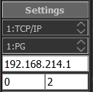
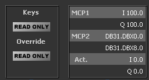

-
A Software MCP483/310 for Sinumerik
VirtualMCP is a small utility program able to simulate a real MCP483 or MCP310 in a Sinumerik 840D environment
The program may be used to control a real Sinumerik when the actual MCP is not accessible or in a remote location.
Download ... Goto GitHub -
Connection

PLC Address: set here the TCP/IP address of the target system (Sinumerik system)
Rack: Step7 rack of the CPU (usually Rack 0).
Slot: Step7 slot of the CPU. Slot 0 for S7-1500 or Slot 2 for S7-300 series
Connect to a target system: Click the 'Connect' button.
-
MCP I/O Addresses

Settings for connection: MCP Input and Output addresses:
MCP1: I/O addresses of the first MCP.
MCP2: I/O addresses of the 2-nd MCP.
Act.: I/O addresses used by VirtualMCP. Editable fields.
For a Sinumerik CNC, the Machine Control Panel (MCP) is considered an Input/Output board of the PLC. In a simplified view we may consider the keys, the Override switches and the 'Access Key' 'connected' to Inputs of the PLC and the LED's of the keys controlled bu PLC outputs.
In order to configure the MCP, the Manufacturer of the machine (OEM) has to define the number of panels used and the corresponding I/O addresses of the MCP boards by parameterize the FB1,DB7 call in the OB100.
On each connection to the PLC, VirtualMCP program set itself in 'Read-Only' Mode, then reads the number of MCP's and the pointers to the first Input and Output address of the MCP from the DB7.
Note It is not unusual for the OEM to use a DB area instead of Inputs and Outputs for the MCP, as in the image.
-
Read Only Mode / Control Mode
In 'Read-Only' mode, the program is reading the status of keys, override switches, LEDs, etc from the real system without altering the data.
You may activate the 'Control' Mode for keys by pressing (Click) the 'Read-Only / Control' button.
-
 Save settings with "Save" button
Save settings with "Save" button
-
More Settings
When "Save" button is clicked, all settings are saved in "monitor.ini" file located in the same folder as the Exe File.
All settings may be altered in this file and will be activated when the program is started.
[display] ;Various settings for display
language=0 ;0 = Romana; 1 = English
stayontop=0 ;0 = Stay on Top deactivated; 1 = Stay on Top activated
displ_time=50 ;Screen refresh every 50ms
[connection] ;Various settings for connection
autoreconnect=false ;When true: If connection is lost or not possible, the software will try again until a connection is done
reconnect_time=5 ;Number of seconds between two connection attempts
[server] ;PLC CPU address
address=192.168.214.1 ;PLC CPU IP Adress
rack=0 ;PLC CPU Rack number, default 0
slot=2 ;PLC CPU Slot number, default 0 for S7-1500 or 2 for S7-300
[address]
in_0_type= I ;[I/Q/M/DB] ;Operand type for the first column: inputs in_0_dbno= 0 ;[number] ;DB number, for OperandType = DB in_0_addr= 0 ;[number] ;Byte number out_0_type= Q ;[I/Q/M/DB] ;Operand type for the 2nd column: outputs out_0_dbno= 0 ;[number] ;DB number, for OperandType = DB out_0_addr= 0 ;[number] ;Byte number -
Versions:
v23.01.24: Added widget scalability.
v20.05.26: Correct some issues related to font size.
v20.05.23: MCP Settings (number of MCP modules and MCP addresses) are read from online system on connection.
v20.05.14: Simulate MCP483, MCP310; selection of 'Read-Only' or 'Control Keys' sau 'Control Keys and Override'.
Project build on Qt5, using Snap7 (by Davide Nardella).